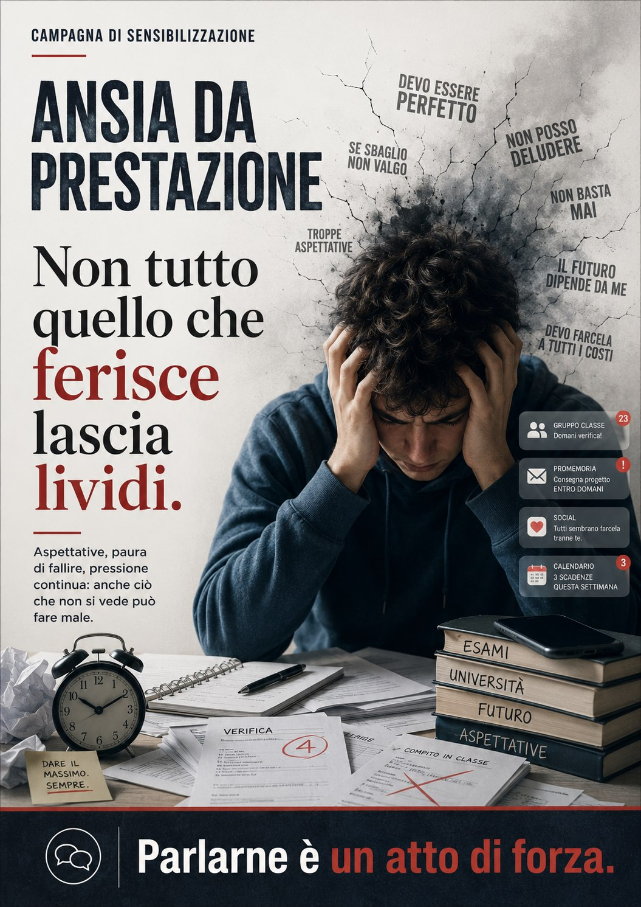
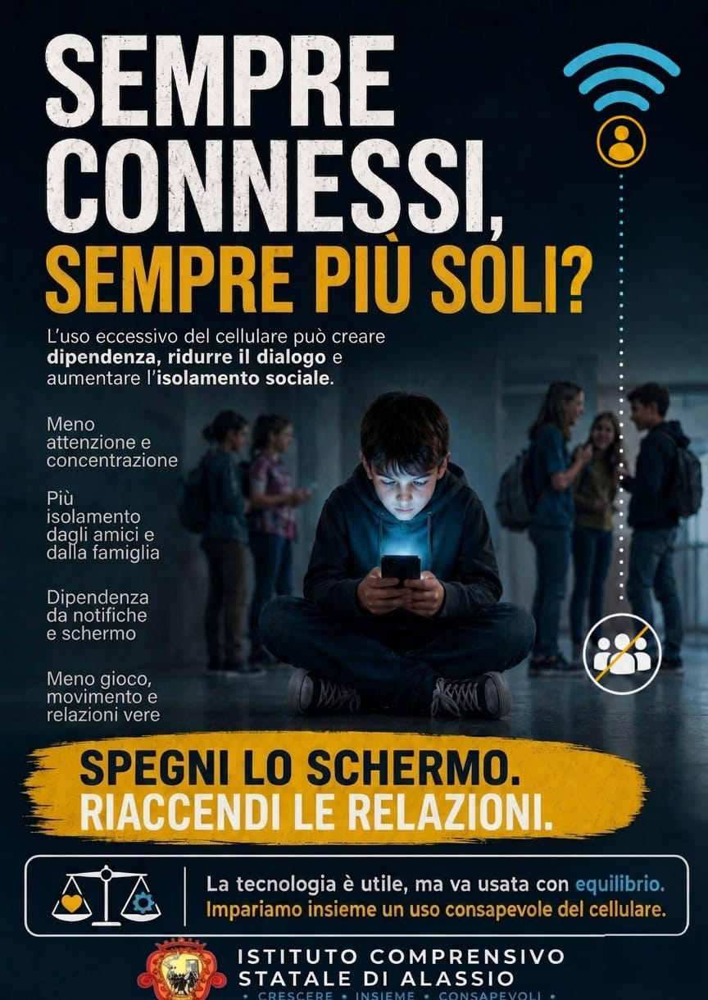
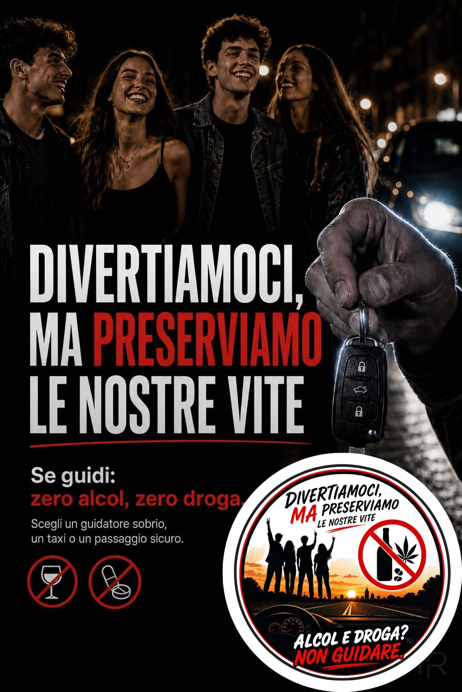
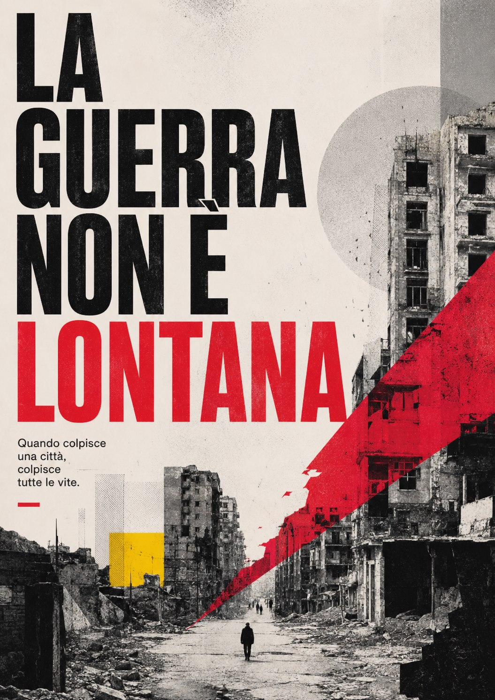
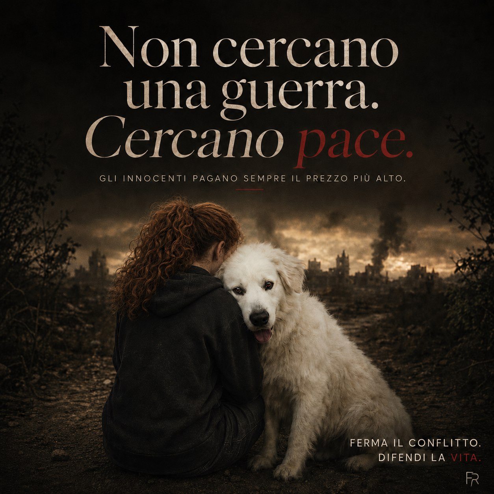
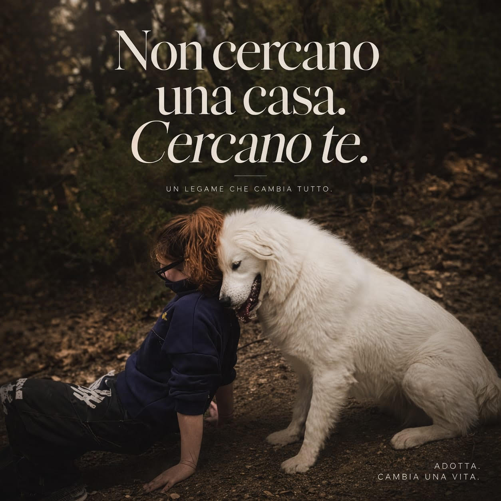

Campagne sociali e scuole
Poster e visual pensati per comunicare temi sensibili con chiarezza, impatto e rispetto.

Il lavoro
La comunicazione sociale deve essere immediata: chi guarda deve capire il messaggio in pochi secondi, senza sentirlo distante o troppo istituzionale.
- Gerarchia visiva forte per guidare la lettura.
- Messaggi brevi e diretti.
- Uso del colore per dare attenzione, urgenza e riconoscibilità.
- Visual adatti a poster, comunicazioni scolastiche, campagne civiche e contenuti social.
Il risultato è un materiale pensato per rendere visibili temi importanti come violenza di genere, ansia, uso consapevole della tecnologia, guerra, sicurezza stradale e adozione responsabile.
Lavori caricati
Una selezione di campagne pensate per rendere temi delicati più leggibili, emotivi e immediati.





